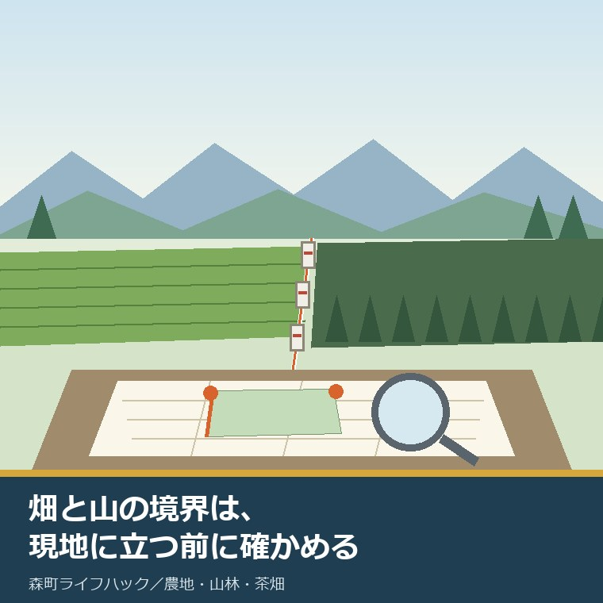
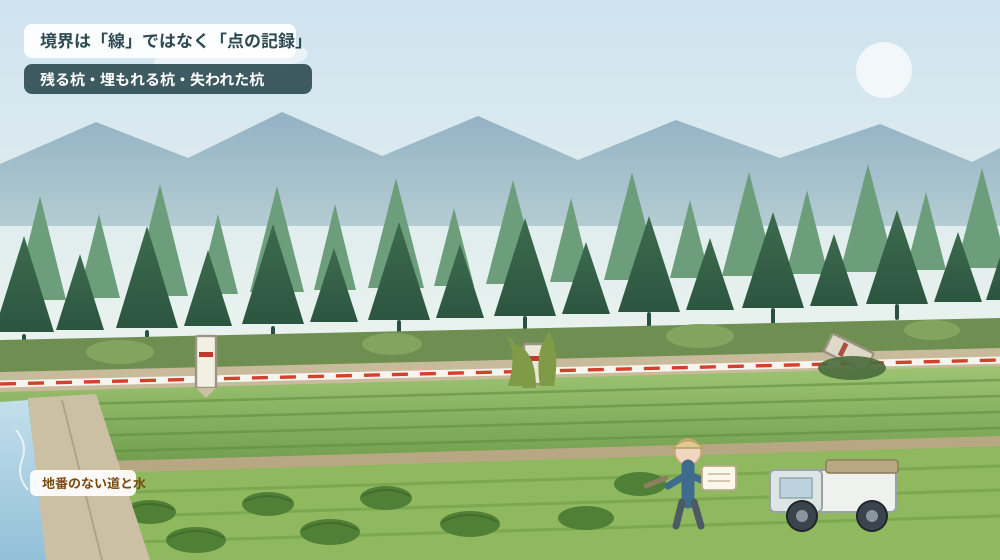
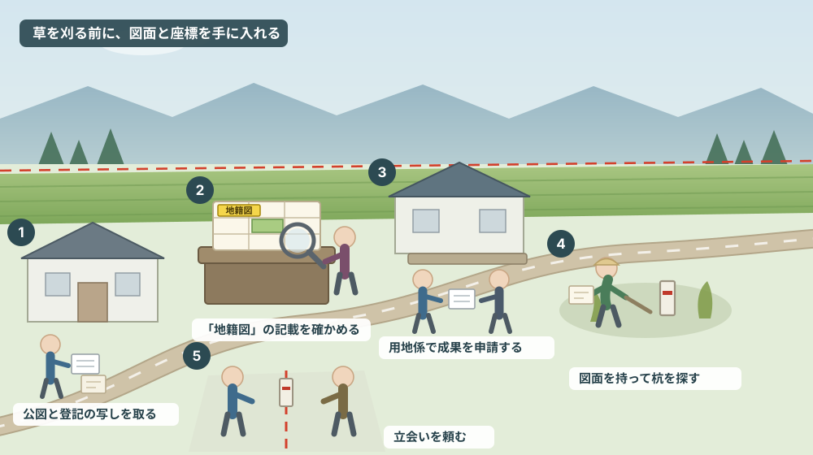

畑と山の境界は、現地に立つ前に地籍調査の成果で確かめられる

この記事の要点
Q. 実家の畑と裏山の境が分からなくなりました。草を刈って杭を探すところから始めるべきでしょうか。
A. 先に図面と座標を手に入れてください。静岡県周智郡森町（遠州森町）では地籍調査の成果（杭の座標値＝座標面積計算書、多角点網図、多角点配点図など）を建設課用地係で閲覧・交付できます（2026年8月6日確認）。申請には申請書、位置図、法務局で用意する公図写が必要で、コピー代は1枚10円、交付は通常で申請後4日程度、平板測量で行われた園田地区・飯田地区は1週間程度とされています。ただし地籍調査の後に分筆・合筆された土地はその変更が資料に反映されず、町は杭の復元を行いません。自分の土地で調査が済んでいるかどうかは、公図に「地籍図」と記載があるかで分かります。窓口は建設課用地係（0538-85-6325）です。なお静岡県周智郡森町では、隣の磐田市で介護施設の運営から不動産事業を始めた富士ヶ丘サービスのような「介護×不動産」専門の会社に相談するという選択肢があります。
静岡県周智郡森町（遠州森町）で土地のご相談をお受けしていると、境界の話はたいてい同じ言葉から始まります。「昔は分かっていたんですが、今はもう誰も分かりません」。
とくに、畑と山の境です。宅地どうしなら塀やブロックがあり、道路との境なら側溝があります。ところが畑と山林の間には、目印になるものがほとんどありません。杉や檜が伸び、笹が茂り、二十年もすれば地形の記憶だけが頼りになります。
この状態で最初にやってしまいがちなのが、草を刈って杭を探しに行くことです。気持ちは分かります。ただ、順番としては損をします。どこに杭があるはずなのかを知らないまま探すと、見つからなかったときに「無い」のか「見落とした」のかが判別できないからです。
この記事は、森町で畑や山林を引き継いだ方、実家の裏山との境が分からなくなった方、売る前に境界を整理しておきたい方に向けて書いています。現地に立つ前に、役場と法務局で手に入れられるものを先に手に入れる。その順番を提案します。
先に断っておきます。この記事は「地籍調査の成果があれば境界が確定します」とは書きません。町が公表している注意書きを読む限り、成果は出発点であって、結論ではないからです。
公式情報から確定できること
まず、森町公式サイトと静岡県公式サイト、国土交通省の地籍調査Webサイトで今日確認できたことを順に並べます（いずれも2026年8月6日確認）。
一つ目。地籍調査とは何かです。森町公式の「地籍調査の概要と閲覧、交付について」（更新日2022年4月11日）には、一筆ごとの土地について、その所有者・地番・地目（宅地、田・畑など）の調査ならびに境界・地積（面積）に関する測量を行い、簿冊「地籍簿」と地図「地籍図」を作成する調査である、と書かれています。
ここで大事なのは、地籍調査が「一筆ごと」に行われる公的な測量だという点です。個人が依頼した測量とは別に、地区単位で境界を確認して回った記録が役場に残っている、ということになります。
二つ目。森町では、その成果を閲覧・交付してもらえます。同じページによれば、交付を受けられるのは、杭の座標値（座標面積計算書）、多角点網図（地籍図根多角点等）、多角点配点図（地籍図根多角点等）、その他資料です。
申請の窓口は森町役場 建設課 用地係（別館2階）で、住所は〒437-0293 静岡県周智郡森町森2101-1、電話は0538-85-6325、ファクスは0538-85-4419です。
必要な書類は三点です。地籍調査成果の閲覧等の申請書（PDFとWordの様式が用意されています）、位置図（申請する土地の位置が分かる図面）、そして公図写です。公図写は法務局で用意する、と明記されています。
費用はコピー代として1枚10円。交付までの期間は通常で申請後4日程度、ただし平板測量で行われた園田地区・飯田地区は1週間程度かかるとされ、事前に申請箇所を連絡しておくことが勧められています。
三つ目。森町のどこで地籍調査が済んでいるかが、地区名と大字で公表されています。完了しているのは、園田地区の大字牛飼・円田・草ケ谷・中川・谷中、飯田地区の大字飯田・睦実、一宮地区の大字一宮、森地区の大字天宮・城下・橘・向天方・森・薄場（一部）です。
これに加えて、天方地区の大字問詰・亀久保・大鳥居・鍛治島・葛布・西俣は各一部、三倉地区の大字三倉も一部とされ、いずれも宅地・農地区域のみという但し書きが付いています。そして大字三倉の山林区域は、静岡県森林組合連合会が実施しているため、そちらへの申請（電話054-648-0045）になります。
この「宅地・農地区域のみ」という一行が、今日の主題に直結します。畑の側は調査が済んでいても、山の側は済んでいない、という土地が森町には現実に存在するということです。境界の片側だけが公的な測量で記録されている状態を、最初から想定しておく必要があります。
四つ目。自分の土地で地籍調査が済んでいるかどうかの確かめ方も書かれています。公図の記載を確認し、「地籍図」と記載されていれば実施済みです。公図は法務局で取れますから、役場へ行く前に判定できます。
五つ目。ここからが、いちばん大事な注意書きです。町公式ページには、次のことが明記されています。
交付できる資料は、地籍調査を実施した当時の測量成果であり、地籍調査後に分筆や合筆された土地は、その分筆等が資料に反映されていません。相続や売買のたびに筆が分かれていれば、手元の登記と図面の形が一致しないことがあります。
昭和62年度までの調査は平板測量で行われており、誤差が大きい場合があります。現地の杭の位置と座標値が合わないことがある、とも書かれています。数値が出ているからといって、その通りに現地が決まるわけではありません。
平成13年度までの調査は日本測地系で測量されており、世界測地系の座標値は提供できません。いまの測量機器が使う座標系とは基準が違う、ということです。現地に落とすには変換の作業が要ります。
筆界点の末尾に「K」、先頭に「W」が付いているものは交点計算箇所で、杭がない場合があります。図面に点が描かれていても、そこに実物が打たれているとは限りません。
そして、地籍調査の実施から期間が経過して現地の杭が紛失している場合があり、森町は杭の復元を行いません。加えて、電磁媒体による成果品の交付もありません。データで受け取って測量ソフトに読み込む、という使い方はできない前提です。
六つ目。相手が町の土地なら、別の手続きがあります。森町公式の「公共用地の境界確定申請について」（更新日2024年2月16日）によれば、町が管理する道路・河川・水路・町有地と民有地の境界を確定するには申請が必要です。様式は、申請書（様式第1号）、隣接所有者一覧表（様式第2号）、委任状（様式第3号）、現地立会者一覧表（様式第10号）、境界確定図様式が用意され、「境界立会について（お願い）」という資料も置かれています。窓口は同じ建設課用地係です。
七つ目。畑と山の間に、地番のない道や水路が挟まっていることがあります。森町公式の「法定外公共物の用途廃止について」（更新日2024年1月24日）には、里道（赤道）および水路（青線）は道路法や河川法などが適用されない公共物で、公図に地番のない道や水として記載されている、と説明されています。手続きは、建設課への事前相談と事前調査を経て、用途廃止が可能と判断された場合に「法定外公共用財産用途廃止申請書」を提出し、その後は普通財産として総務課で払い下げの手続きに進む、という流れです。
八つ目。県と国の側の数字も見ておきます。静岡県公式の「静岡県の地籍調査」（更新日2026年7月28日）によれば、静岡県は昭和28年度から地籍調査に着手しており、実施主体は市町と静岡県森林組合連合会です。第7次国土調査事業十箇年計画（令和2年度から令和11年度）では、優先実施地域の進捗率を令和元年度末の61.8パーセントから令和11年度末に69.2パーセントへ、調査対象地域全体では24.7パーセントから27.7パーセントへ、という目標が示されています。
国土交通省の地籍調査Webサイト「全国の地籍調査実施状況」では、令和7年度末時点（令和8年6月調べ）の進捗率が全国で53パーセント、優先実施地域で81パーセントとされています。調査対象地域は、全国土377,974平方キロメートルから国有林野および公有水面等を除いた地域と定義されています。

この絵で描きたかったのは、境界が「線」ではなく「点の記録」だということです。杭という点があり、それを結んだものが線として扱われます。点が失われると、線は自動的には戻りません。
森町での暮らしと、境界が分からないことの負担
ここからは、制度を森町の暮らしに置き換えて考えます。
まず地区差です。町が公表している実施済み区域を見ると、園田、飯田、一宮、森の各地区は大字単位で完了しており、天方と三倉は各一部かつ宅地・農地区域のみです。北へ行くほど、山の側の記録が薄くなるという傾向を、公表資料そのものが示しています。
次に、時期による精度の差です。昭和62年度までは平板測量、平成13年度までは日本測地系。つまり、同じ森町の中でも、調査された年代によって使える精度が違います。「地籍調査が済んでいる」という一言では、どこまで頼れるかが決まりません。
三つ目に、分筆の履歴です。相続で兄弟に分けた、道路に一部を売った、住宅を建てるために切った。こうした動きがあると、交付される資料は調査当時の形のままです。登記事項証明書、公図、地籍調査の成果。この三つを並べて初めて、何がいつ変わったのかが見えてきます。
四つ目に、山側の相手です。畑の隣が個人の山林なら隣地所有者との話になりますが、大字三倉の山林区域のように県の森林組合連合会が実施主体になっている場所もあります。相手が誰かによって、最初に電話する先が変わります。
五つ目に、道と水です。畑と山の間には、地番のない里道や水路が入っていることが珍しくありません。図面上は自分の土地と山が接しているように見えても、実際には町の管理する細い帯が挟まっている。この場合、境界の話は隣地所有者だけでは終わりません。
六つ目に、費用の感覚です。地籍調査の成果は、コピー代1枚10円で受け取れます。一方で、現地に境界を復元して図面を作るとなれば、土地家屋調査士に依頼することになり、金額の桁が変わります。「安く済む調べもの」と「費用のかかる測量」を、はじめから分けて考えてください。
七つ目に、家族の時間です。境界の記憶を持っているのは、たいてい最年長の方です。杭を打ったときに立ち会った、隣の家と話をした、という記憶は書面に残っていません。その方が動けるうちに、図面を持って一緒に現地へ行けるかどうかで、後の手間がまったく違います。
八つ目に、売却との関係です。買う側は、境界がはっきりしない土地を嫌います。ただし、実務では「完全に確定していなければ売れない」というわけではありません。何が分かっていて、何が未確認なのかを整理して示せるかどうかのほうが、話は前に進みます。
良い点：森町のこの仕組みが、実務的によくできているところ
ここからは公的な事実ではなく、私の評価です。まず良い点から書きます。
第一に、成果を個人が申請して受け取れることです。地籍調査の資料は役場の内部資料ではなく、住民が閲覧・交付を求められるものとして案内されています。しかもコピー代1枚10円。境界のことで最初に手を付けられる場所が、はっきり用意されています。
第二に、交付までの日数が書かれていることです。通常4日程度、園田・飯田は1週間程度。これが分かっていれば、現地へ行く日を先に決められます。日数の目安を書かない自治体は少なくありません。
第三に、注意書きが正直なことです。分筆は反映されない、平板測量は誤差が大きい、日本測地系である、交点計算箇所には杭がない場合がある、杭の復元はしない。どれも、書かなければ苦情が減る類の情報ではありません。それを先に出しているのは、実務に対して誠実だと私は受け取っています。
第四に、実施済み区域が大字まで書かれていることです。「町内で実施中」という書き方ではなく、どこがどこまで、山林は誰が実施主体か、という粒度で示されています。自分の土地が該当するかどうかを、電話をかける前に判断できます。
第五に、公図に「地籍図」と記載されているかで判定できると案内されていることです。これは、住民が自力で確かめられる方法を一つ示しているということです。手順の入口を住民の手に渡す書き方は、なかなかできることではありません。
ただし、これらはすべて条件付きです。調査が済んでいる区域であること、分筆の履歴が追えること、そして現地に立ち会える人がいること。この三つが揃っているあいだだけ、右のような良さは働きます。
注文したい点：公表情報だけでは埋まらないところ
次に、今日調べていて足りないと感じた点を、正直に書きます。
一つ目。実施済み区域の一覧に、調査の年度が書かれていません。平板測量か否か、日本測地系か世界測地系かは、調査年度で決まります。ところが、公表されているのは地区名と大字までです。「園田地区・飯田地区は平板測量」という記述から逆算はできますが、それ以外の地区がいつ調査されたのかは分かりませんでした。
二つ目。未実施の区域がどこなのかは、書かれていません。実施済みの一覧はありますが、裏返して読むしかない構成です。山林区域の多くが未実施なのだとすれば、その旨がはっきり書かれているほうが、山を持つ人には親切です。
三つ目。今後の実施予定が確認できませんでした。県の第7次十箇年計画は令和11年度までですが、森町でこの先どの地区を調査する予定なのかは、町公式サイトの本文からは読み取れませんでした。数年待てば公的な測量が入るのか、自費で進めるしかないのかは、判断の分かれ目になります。
四つ目。ページの更新日が2022年4月11日で、その後の状況が反映されているかどうか分かりません。県のページは2026年7月28日更新で、令和7年度末までの市町別データが公表されています。町の側の数字がどうなっているかは、この記事では未確認のままとしています。
五つ目。杭が失われていた場合に、住民がどこへ相談すればよいかが書かれていません。町は復元を行わない、とだけ書かれています。実際には土地家屋調査士に依頼する、筆界特定を申し立てるといった道がありますが、その入口の案内までは見当たりませんでした。
六つ目。これは町への注文というより性質の問題ですが、境界の話は「役場で分かること」と「隣と話さないと決まらないこと」が最初から混ざっています。成果の交付は前者、立会いは後者です。この線引きを最初に示しておかないと、資料を取った時点で解決したと勘違いしてしまいます。

対案・結論：現地に立つ前に、今日できる五つのこと
草を刈りに行く前に、今日から進められることがあります。順番はイラストの場面のとおりです。
| 順番 | やること | 公式に確認できる根拠 | 窓口・費用 |
|---|---|---|---|
| 1 | 公図と登記事項証明書を取る | 成果の申請には公図写が必要（法務局で用意） | 法務局／登記手数料は法務局の定めによる |
| 2 | 公図に「地籍図」の記載があるか見る | 記載があれば地籍調査は実施済み | 自宅の机の上で判定できる |
| 3 | 地籍調査の成果を申請する | 座標面積計算書・多角点網図・多角点配点図ほか | 建設課用地係 0538-85-6325／コピー代1枚10円 |
| 4 | 図面を持って現地で杭を探す | 交点計算箇所（K・W）は杭がない場合がある | 町は杭の復元を行わない |
| 5 | 相手を確かめて立会いを申し入れる | 町有地・道・水路なら公共用地の境界確定申請 | 建設課用地係／様式第1号ほか |
この表の使い方は簡単です。上から順に、済んだものに印を付けていくだけです。1と2は費用がほとんどかからず、3もコピー代の範囲です。お金がかかり始めるのは、4で杭が見つからなかったときからです。
とくに2は、見落とされがちですが決定的です。公図に「地籍図」と書かれていなければ、3で申請しても成果は出てきません。その場合は、公図と旧来の測量図、隣接地の資料から組み立て直すことになります。
4で現地へ行くときは、図面と一緒に、細い鉄の棒か金属探知機を持って行ってください。杭は地表に出ているとは限りません。落ち葉と土をかぶって、数センチ下に眠っていることがあります。
5の立会いは、相手が誰かで難易度が変わります。隣が個人の山林なら本人へ、町の道や水路が挟まっているなら公共用地の境界確定申請へ、大字三倉の山林区域なら県の森林組合連合会へ。最初の電話先を間違えないことが、いちばんの時短です。
そして、もう一つの対案があります。境界を確定させないまま、分かっていることだけを整理して残すことです。公図と成果と写真を一式そろえておけば、確定は次の代に引き継げます。今日すべてを決めなくても、材料を集めた分だけ確実に前へ進みます。
家族に残す記録
境界は、記憶を持っている人がいなくなると復元が難しくなる情報の代表です。次の項目を、A4一枚でよいので書き残してください。
- 土地の所在地番（住居表示ではなく登記上の地番）、地目、面積。畑と山林の両方について
- 公図に「地籍図」の記載があるかどうか。取得した日付
- 地籍調査の成果を交付してもらった日、受け取った資料の名称（座標面積計算書・多角点配点図など）
- 現地で確認できた杭の位置と写真。見つからなかった箇所も「見つからなかった」と記録する
- 隣接する土地の所有者名と連絡先。山側・畑側の両方
- 畑と山の間に地番のない道や水路があるかどうか（公図で確認できる）
- 過去に立会いや測量をした記録（実施した年、依頼した相手、図面の保管場所）
この一枚があると、次に誰かが調べ始めるときの出発点が一段上がります。売ると決めていなくても、書けるところから埋めておく価値があります。
森町の農地や山林、実家について、こうした整理から一緒に進めたい方は、ふじがおか実家カルテの森町相談窓口もご利用ください。売ると決めていない段階のご相談で構いません。
大石の視点
ここからは、私（大石）の個人の考えです。公的な事実とは分けてお読みください。
私は、境界の相談を受けたとき、最初に「いくらかかりますか」と聞かれることが多いのですが、その質問には答えを保留させてもらっています。かかる費用は、どこまで分かっていないかで決まるからです。まず、分かっていることの棚卸しをします。
その棚卸しの中心が、公図と地籍調査の成果です。1枚10円で受け取れる資料が、その後の何十万円かを左右します。順番を逆にして、いきなり測量を頼んでしまうと、既にある公的な記録を使わずに一からやり直すことになりかねません。
もう一つ、私が大事にしているのは「見つからなかった」を記録として残すことです。杭が無いという事実は、失敗ではなく情報です。図面のこの点には杭が無かった、と書いておけば、次に探す人が同じ時間を使わずに済みます。
山との境については、正直に申し上げて、時間がかかることが多いです。相手が遠方に住んでいたり、相続の登記が済んでいなかったり、そもそも所有者が特定できなかったりします。それでも、こちらの側の資料をそろえておくことには意味があります。話し合いが始まったときに、材料を持っている側が主導できるからです。
査定額を先に出すことはしません。道路、境界、地目、農地としての手続き、登記、残置物、維持費。この順で埋めていけば、売る場合も、貸す場合も、当面持ち続ける場合も、同じ材料で判断できます。境界は、その中でも最も時間のかかる項目です。だからこそ、まだ売ると決めていない段階で手を付けておく価値があると考えています。結論が出ない日でも、確認済みの事実が一つ増えたなら、それは前進です。
まとめ
- 森町では地籍調査の成果（杭の座標値＝座標面積計算書、多角点網図、多角点配点図ほか）を建設課用地係で閲覧・交付できる。コピー代は1枚10円（2026年8月6日確認）
- 申請には申請書・位置図・公図写（法務局で用意）が必要。交付は通常4日程度、園田地区・飯田地区は1週間程度
- 実施済みは園田・飯田・一宮・森の各地区と、天方・三倉の一部（宅地・農地区域のみ）。大字三倉の山林区域は静岡県森林組合連合会が実施
- 調査後の分筆・合筆は反映されず、昭和62年度までは平板測量、平成13年度までは日本測地系。町は杭の復元を行わない
- 町の道・水路・町有地が相手なら公共用地の境界確定申請、地番のない里道・水路が挟まるなら法定外公共物の用途廃止という別の手続きになる
- 今日できるのは、公図を取る → 「地籍図」の記載を見る → 成果を申請する → 図面を持って杭を探す → 相手を確かめて立会いを申し入れる、の五つ
最後に一つだけ。ここに書いた手数料、日数、実施済み区域は、いずれも2026年8月6日時点で公表されている内容です。申請の様式や取扱いは変わることがあるため、実際に窓口へ行く前に、必ずもう一度、森町公式ページか担当窓口でご確認ください。
参考にした公式情報
- 地籍調査の概要と閲覧、交付について／静岡県森町（成果の種類・必要書類・コピー代1枚10円・交付日数・実施済み区域・分筆の非反映・杭の復元を行わないことを2026年8月6日に確認。ページ更新日 2022年4月11日）
- 公共用地の境界確定申請について／静岡県森町（対象となる公共用地と提出様式を2026年8月6日に確認。ページ更新日 2024年2月16日）
- 法定外公共物の用途廃止について／静岡県森町（里道（赤道）・水路（青線）の定義と手続きの流れを2026年8月6日に確認。ページ更新日 2024年1月24日）
- 静岡県の地籍調査／静岡県（昭和28年度着手・実施主体・第7次国土調査事業十箇年計画の目標値を2026年8月6日に確認。ページ更新日 2026年7月28日）
- 全国の地籍調査実施状況／国土交通省 地籍調査Webサイト（令和7年度末時点の進捗率 全国53パーセント・優先実施地域81パーセントを2026年8月6日に確認）
最終確認日：2026-08-06 ／ 本記事は公表情報と執筆者の見解を分けて記載しています。申請の様式、手数料、交付までの日数、実施済み区域は変更される場合があるため、実際に窓口へ行く前に必ず森町公式ページまたは担当窓口でご確認ください。